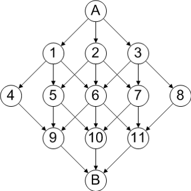

Problem made by Lockheed Martin, is CodeQuest 2014 Problem 13
This problem has a difficulty of 80
Choices are everywhere. Left or right? Beef or chicken? To be or not to be? These are the questions. But your task involves a different kind of choice – one that will take you from point A to point B.
Choosing a path from point A to point B involves evaluating your choices at each step along the way. During the first half of your journey, the possibilities are many. Specifically, at each point along the way you will have to choose to move in one of three directions.
However, sometimes in life the closer we get to our destination, the fewer choices we have in terms of how to get there. Therefore, for the second half of the journey, your choices will start to narrow. The set of all possible paths will look like a diamond.

Starting at node A, you can choose to go to node 1, 2, or 3. Your choice there determines your next set of choices and so on. Once you hit the middle, your choices narrow if you are on the edge. Being in node 6 means you still have three choices to get to the next level, but being in nodes 5 or 7 reduce your options to 2. Nodes 4 and 8 have zero choice.
Each path will be given a weight representing the difficulty of going down that path. Your job is to determine the path (or paths) of least resistance in getting from point A to point B.
The file Prob13.in.txt will contain path weights separated by spaces. All paths will have a weight. Path weights will be grouped based on the nodes above them from left to right. For example, the input file will have all three path weights associated with node 1 before the three path weights associated with node 2. Paths that do not exist will be omitted.
Each line of input will contain the connectors for each level separated by spaces. There will always be a multiple of three connectors per line.
1 2 3
2 1 1 1 1 1 1 1 1
0 2 1 1 2 1 2 1 2
1 3 1
Your program should report two things:
1. The lowest possible path difficulty. Use the format “Lowest path difficulty: #”.
2. The number of paths that have the lowest possible path difficulty. Use the format “Number of paths with the lowest difficulty: #”.
Lowest path difficulty: 4
Number of paths with the lowest difficulty: 3